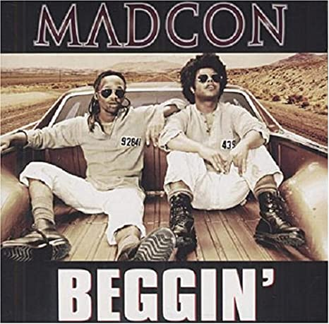

Madcon
Composição: Bob Gaudio / Peggy Farina

Oh, put your lovin' hand out, baby
I'm beggin'
Beggin', beggin' you
Put your lovin' hand out, baby
Beggin', beggin' you
Put your lovin' hand out, darling
Ridin' high when I was king
Played it hard and fast, 'cause I had everything
Walked away, wonderin' then
But easy come and easy go
And it would end
So ah, any time I need ya, let me go
Any time I feed ya, get me low
Any time I see ya, let me know
But I planted that seed, just let me grow
I'm on my knees while I'm (beggin')
'Cause I don't want to lose (you)
I got my arms so spread
And I hope that my heart gets fed
Matter of fact, girl, I'm beggin'
Beggin', beggin' you
Put your lovin' hand out, baby
Beggin', beggin' you
Put your lovin' hand out, darling
I need you (yeah) to understand
Tried so hard to be your man
The kind of man you want in the end
Only then can I begin to live again
An empty shell I used to be
Shadow of my life was hangin' over me
A broken man but I don't know
Won't even stand the devil's dance to win my soul
What we doin'? What we chasin'?
Why the bottom? Why da basement?
Why we got good shit, don't embrace it?
Why the feel for da need to replace me?
Ya on a runway track from the good
I want to paint in the pictures any way we could react
Like the heart in a trash where you should
You done gave it away
Ya' had it 'til you took it back
But I keep walkin' on, keep rockin' dawns
Keep walking forward, now the court is yours
Keep browsin' halls
'Cause I don't wanna live in a broken home
Girl, I'm beggin'
Beggin', beggin' you
Put your lovin' hand out, baby
Beggin', beggin' you
Put your lovin' hand out, darling
I'm fightin' hard (yeah)
To hold my own (hold my own)
Just can't make it all alone (all alone)
I'm holdin' on
Can't fall back
I'm just a con 'bout to fade to black
Beggin', beggin' you
Put your lovin' hand out, baby
Beggin', beggin' you
Put your lovin' hand out, darling
Beggin', beggin' you
Put your lovin' hand out, baby
Beggin', beggin' you
Put your lovin' hand out, darling
Madcon
Composição: Bob Gaudio / Peggy Farina
Oh, estenda sua mão amorosa, querida
Estou implorando
Implorando, implorando pra você
Estenda sua mão amorosa, querida
Implorando, implorando pra você
Estenda sua mão amorosa, querida
Curtindo de verdade quando eu era um rei
Joguei forte e rápido, porque eu tinha tudo
Me afastei, imaginando então
Mas vem fácil e vai fácil
E isso terminaria
Então, ah, sempre que preciso de você, me deixa ir
Sempre que eu te alimento, me rebaixa
Sempre que te vejo, me avise
Mas eu plantei essa semente, só me deixe crescer
Estou de joelhos enquanto estou (implorando)
Porque não quero perder (você)
Estou com meus braços tão abertos
E espero que meu coração se preencha
Na verdade, garota, estou implorando
Implorando, implorando pra você
Estenda sua mão amorosa, querida
Implorando, implorando pra você
Estenda sua mão amorosa, querida
Preciso que você (é) entenda
Tentei tanto ser o seu homem
O tipo de homem que você quer no final
Apenas assim, começarei a viver de novo
Eu costumava ser uma casca vazia
A sombra da minha vida pairava sobre mim
Um homem quebrado, mas eu não sei
Nem sequer suportaria fazer a dança do diabo para ganhar minha alma
O que estamos fazendo? O que estamos perseguindo?
Por que o fundo? Por que o porão?
Por que nós temos coisas boas e não as abraçamos?
Por que sentir a necessidade de me substituir?
Você está numa pista de corrida, se afastando do bem
Quero pintar nas fotos qualquer coisa que nos faça reagir
Como o coração em um lixo onde você deveria
Você jogou fora
Você o tinha até que o pegou de volta
Mas continuo andando, continuo tentando até o amanhecer
Continuo andando pra frente, agora a quadra é sua
Continuo percorrendo os corredores
Porque não quero viver em uma lar destruído
Garota, estou implorando
Implorando, implorando pra você
Estenda sua mão amorosa, querida
Implorando, implorando pra você
Estenda sua mão amorosa, querida
Estou lutando muito (é)
Para me manter de pé (manter de pé)
Não posso prosseguir sozinho (sozinho)
Estou mantendo
Não posso recuar
Sou apenas um enganador prestes a desaparecer
Implorando, implorando pra você
Estenda sua mão amorosa, querida
Implorando, implorando pra você
Estenda sua mão amorosa, querida
Implorando, implorando pra você
Estenda sua mão amorosa, querida
Implorando, implorando pra você
Estenda sua mão amorosa, querida